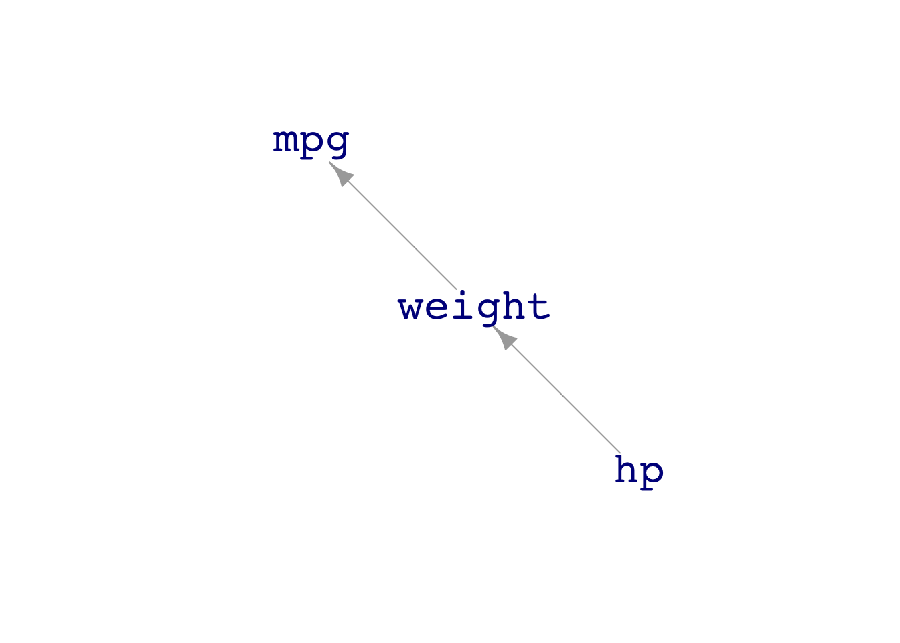
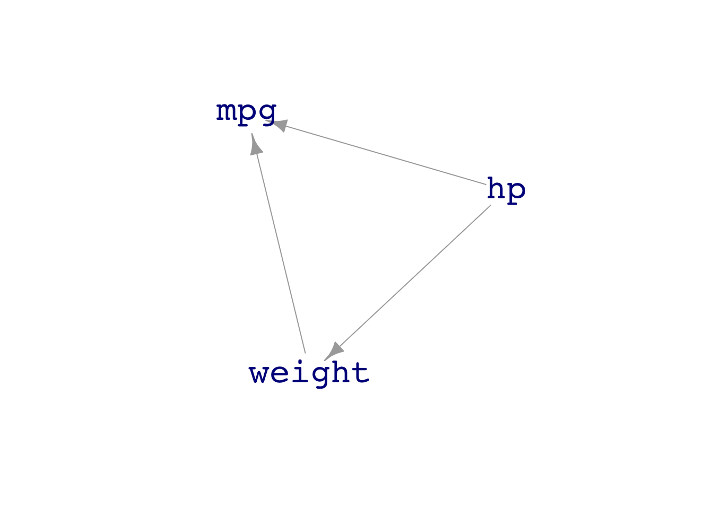
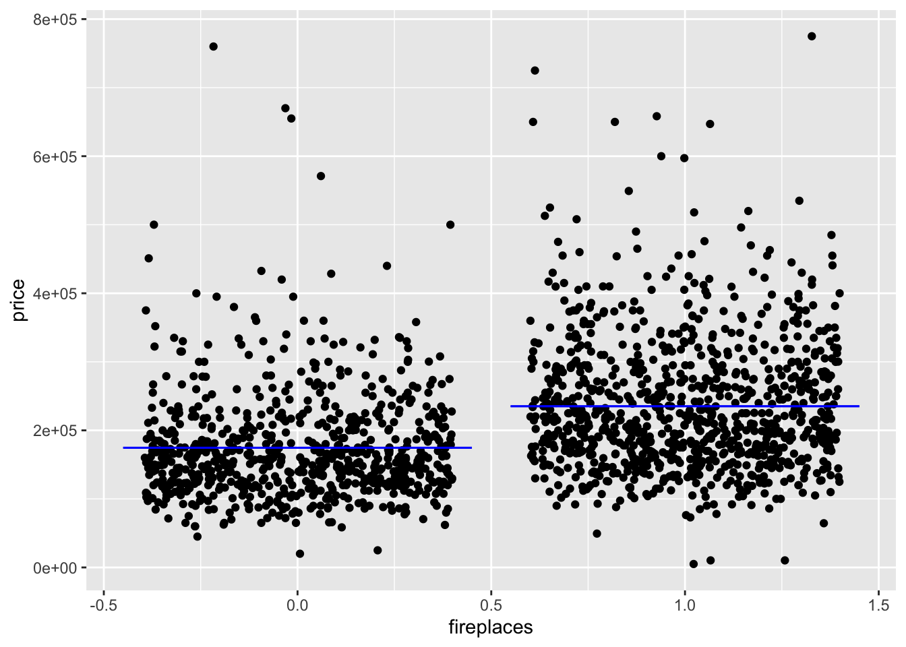
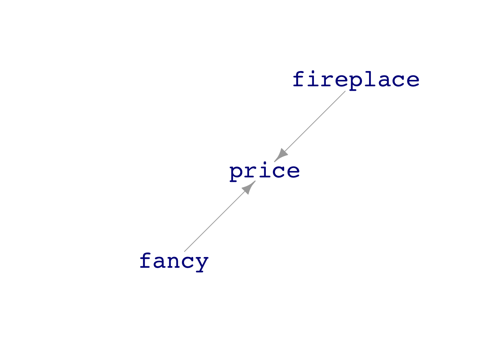
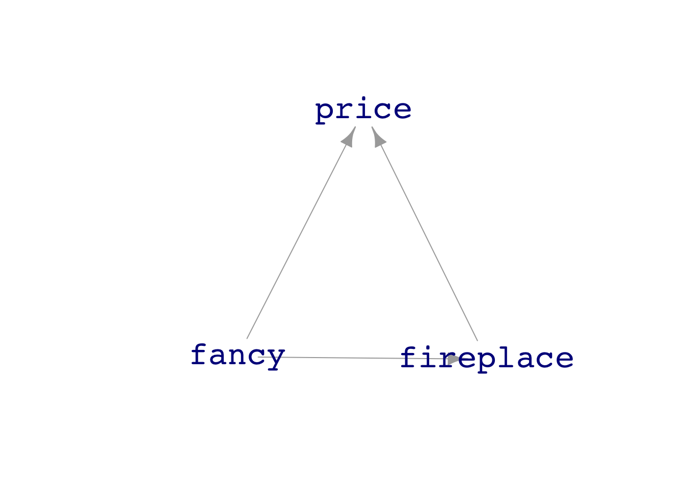

Mod <- lm(mpg ~ hp, data=mtcars)
model_eval(Mod, hp=c(100, 150)) hp .output .lwr .upr
1 100 23.27603 15.20660 31.34547
2 150 19.86462 11.85278 27.87645You now have a substantial toolbox for for summarizing data in ways that support statistical thinnking. Time to move to the next step: extracting actionable information from such summarizing. Why the word “actionable” in the previous sentence? Because much of the time the goal of summarizing data is to guide decision making. The setting is that you or your organization have to make a decision: administer a medicine, change a budget, raise or lower a price, respond to an evolving situation, and so on. Decisions ought to be made on an informed basis. Often, the information needed is hidden in tables of data. The statistical thinker knows how to extract information in a form that is as useful as possible to the decision maker.
Setting for decisions vary widely, but a useful simplification splits support for decision making into two broad categories.
Less mundane: A patient comes to an urgent-care clinic with symptoms. A decision needs to be made about what disease or illness the patient has in order to guide choices of tests and, in turn, possible treatment. The inputs to the prediction are the symptoms—neck stiffness, a tremor, and so on—as well as facts about the person—age, sex, occupation, etc. The output of the prediction will assign a probability to each of medical conditions that could cause the symptom. As new tests or measurements are done—temperature, blood pressure, white-blood-cell count, blood oxygenation, and others—they become new inputs for the prediction and the probabilities change accordingly. The television drama House provides in every episode an example of such evolving predictions, which clinicians call “differential diagnosis.” The word “prediction” suggests the future, but many predictions have to do with the current or past state that is as yet unknown to greater or lesser extent. Synonyms for “prediction” include “classification” (Lessons 34 and 35), “conjecture”, “guess”, “bet”, …. The phrase “informed guess” points to the idea: using information to support decision making.
This lesson is focuses on two ideas that are useful for building and summarizing models of a system for the purposes of intervening in that system: effect size and interaction. We will need some additional concepts and tools in order to bring causality into the picture. This will have to wait until Lessons 28 through 31.
In an intervention you change something about the world. That might be the budget for a program, the dose of a medicine, the fuel input to an engine. The thing you change is the input. In response, something else in the world changes: reading ability of students, the patient’s seratonin levels (a neurotransmitter), the power output from the engine. The thing that changes in response to the change in input is called the “output.” Systems such as education, mental state, or aircraft have many components. The context in which the modeler works dictates which of these components ought to be considered the input and which the output. Usually the input is something that you can directly change; the output is something that changes in response.
The effect size is merely a statement of the amount of change in the output with respect to the input. There are two fundamental types of inputs, just as there are two fundamental types of variables:
categorical: e.g., whether or not a person smokes.
quantitative: e.g., how many cigarettes per day a person smokes
Similarly, there are two fundamental types of outputs: categorical or quantitative.
categorical: e.g. whether the person develops cancer
quantitative: e.g. the lung capacity of the person
How you properly describe an effect size depends on types of both the input and the output.
| input | output | effect size |
|---|---|---|
| categorical | quantitative | the **amount* by which the output changes when the input changes category |
| quantitative | quantitative | the rate of change in the output with respect to the input. Calculus students will recognize this rate as the partial derivative of the output with respect to the input. |
| categorical | categorical | the probability of being in each of the output categories when the input category is changed |
| quantitative | categorical | the rate of probability of being in each of the output categories per unit of change in the input. |
Terms like “rate of probability” can be confusingly abstract. It helps to have some examples in mind to keep your thinking clear.
Examples:
So long as you keep track of which of the four combinations of input and out are applicable to your case, calculating an effect size is easy. You evaluate the model at two values for the input then collect the two corresponding output values. For instance, you can use the model_eval() function. It takes as arguments the model whose effect size you’re interested in and, optionally, values for some or all of the inputs.
Mod <- lm(mpg ~ hp, data=mtcars)
model_eval(Mod, hp=c(100, 150)) hp .output .lwr .upr
1 100 23.27603 15.20660 31.34547
2 150 19.86462 11.85278 27.87645The column labeled .output shows the model output for the corresponding input values for hp. Here, both the input and the output are quantitative, so the effect size will be a ratio: change in output divided by change in input. In this case: \[\text{effect size:}\ \ \frac{23.28-19.86}{100-150} = -0.0684\] It is wise to pay attention to the units of the effect size. Here, the output is mpg, which has units miles-per-gallon. The input has units horsepower, so the units of the effect size are miles gallon-1 horsepower-1. Admittedly, that’s a mouthful of units. But it tells us something simple: A car with 100 additional horsepower will get worse fuel economy, down by 6.8 miles per gallon.
Notice that the report from model_eval() has additional columns: .lwr and .upr. That s a glue that it is giving both a single-number, “point” estimate (.output.) and a two number interval estimate. We’ll talk about the meaning of the interval in the following section and in Lesson 26.
It might seem from the negative sign on the effect size of engine horsepower on fuel economy that a more powerful engine is not as efficient than a less powerful engine at moving the car a given number of miles. That’s a reasonable conclusion. But the statistical thinker always keeps in mind other possibilities. For instance, another factor in fuel economy is the overall weight of the vehicle. A van designed to haul many passengers weighs more than a 2-passenger sporty vehicle. The van needs more horsepower because it is accelerating more weight.
Figure 1 shows four DAGs, each of which describe a plausible scenario.



In DAG A, the vehicle’s design weight determines that an engine with high horsepower will be part of the design. The weight is also responsible for the lower fuel economy.
The other DAGs describe other scenarios. In DAG C, for instance, the car designers decided to build a muscle car and put in a big engine. The engine itself adds to the vehicle’s weight, and the higher weight determines lower miles per gallon. DAG D expresses a slightly different belief: again the choice to build a muscle car (high hp) influences the weight. But in DAG B, the big engine also directly influences the fuel economy, perhaps because the fuel-to-air ratio of the car, in normal use, is not optimal.
As we will see in Lesson 28, to reveal the direct causal link between engine power and fuel economy requires different choices for the model formula depending on which DAG you think might be relevant.
Another example: Are longer books more expensive? Intuition suggests so, because more editing, paper, printing and shipping goes into making a longer book. We have some data that might be informative, moderndive::amazon_books. We can build a model of, say, list_price versus num_pages. To look at the effect size, let’s compare a 200-page book to a 400-page book.
Mod <- lm(list_price ~ num_pages, data = moderndive::amazon_books)
model_eval(Mod, num_pages = c(200, 400)) num_pages .output .lwr .upr
1 200 15.82014 -11.636987 43.27726
2 400 19.79643 -7.637503 47.23037The longer book costs about 4 dollars more. So the effect size, to judge from this model, is $4 dollars divided by 200 more pages, which comes to 2 cents per page.
Another example: Are hardcovers more expensive than paperbacks? The output is a quantitative variable: price. The input is categorical. In the moderndive::amazon_books data frame the variable hard_paper has levels “P” and “H.” A possible model:
Mod <- lm(list_price ~ hard_paper, data = amazon_books)
model_eval(Mod, hard_paper = c("P", "H")) hard_paper .output .lwr .upr
1 P 17.13523 -10.62291 44.89338
2 H 22.39393 -5.46052 50.24839When a model has more than one explanatory variable, there is a separate effect size for each. To illustrate, let’s consider prices of houses as recorded in the mosaicData::SaratogaHouses data frame, based on house sales in Saratoga County, NY, USA in 2006. We’ll follow a question asked by then-student Candice Corvetti in her Stat 101 class at Williams College: “How much is a fireplace worth?” Response variable: price. Explanatory variable: fireplaces. Since a handful of the houses has multiple fireplaces, we will simplify by filtering out those houses to retain only the ones with a single fireplace or none.
Simplified <- SaratogaHouses %>%
filter(fireplaces <= 1)
Mod <- lm(price ~ fireplaces, data = Simplified)
Mod_values <- model_eval(Mod, fireplaces = c(0,1))
Mod_values fireplaces .output .lwr .upr
1 0 174653.3 -751.4332 350058.1
2 1 235162.9 59783.5404 410542.3Simplified %>%
ggplot(aes(x=fireplaces, y = price)) +
geom_jitter() +
geom_errorbar(data=Mod_values, aes(ymin=.output, ymax=.output, x = fireplaces), y=NA,
color="blue")
From the graphic, you can see that houses with a fireplace tend to have higher prices. From the report of the evaluated model, you can calculate the effect size: $235K for a house with a fireplace, $175K for a house without one. This suggests the value of a fireplace is $60K.
There are, of course, many other things that determine the price of a house. Real-estate agents famously list the three most important factors as “location, location, and location.” Common sense brings in other explanatory variables: how big the house is, how luxurious, how many bathrooms, and so on. The statistical thinker knows to put any one explanatory variable into the context of other plausable factors.
For simplicity, let’s collect all the factors other than fireplaces into a hypothetical variable which we will call “fancy.” Here are three plausible DAGs that plausibly describe an affect of fireplace on price in the context of fancy.


In DAG A, fancy and fireplace both contribute to price, but independently. In DAG B, fireplace directly contributes to price, but whether or not a house has a fireplace depends on the level of fancy. In DAG D, fireplace has no direct affect on price, which is set entirely by fancy. The fireplace variable is just an indicator of fancy.
We can’t say from the data alone which of these three DAGs is the closest description of the situation. In Lessons 28, 30, and 31 we will consider how the choice of explanatory variables in a model leads to a faithful or misleading picture of the connections. There you will find out that DAGS A & B both imply that fancy should be an explanatory variable if we want the effect size from the model to represent the direct effect of a fireplace on price. Easy enough to fit that model, … except that we don’t have an actual variable fancy in the SaratogaHouses data frame. To keep things simple for the moment, we will use livingArea—the size of the house—as a rough approximation to the hypothetical fancy.
The effect size of fireplaces on price is found by comparing the model output for houses with and without a fireplace, holding the values of all the other explanatory variables constant.
Mod2 <- lm(price ~ fireplaces + livingArea, data = Simplified)
model_eval(Mod2, fireplaces = c(0,1), livingArea = 2000) fireplaces livingArea .output .lwr .upr
1 0 2000 234706.4 101212.9 368199.9
2 1 2000 240420.8 106988.7 373852.8For a house with living area 2000 feet2, the model output is $235K with no fireplace and $240K with a fireplace, putting the effect size of fireplace on price at $5K. That’s much smaller than the previous model, price ~ fireplace, gave for the effect size. The reason for the difference in results from the two models is that houses with fireplaces tend to be larger in area.
Statistical thinkers know that any estimate they make, including estimates of effect sizes, are subject to sampling variation. Consequently, an interval estimate should be given. This communicates to the decision maker the uncertainty in the quantity being estimated. Sophisticated decision makes take this uncertainty into account, considering the range of outcomes likely from whatever use they make of an effect size. Statistically naive decision makers—even highly educated descision makers can be statistically naive—look at the interval and will sometimes ask the modeler, “Just give me a number. I don’t know what to do with two numbers.” Such a request might elicit a frank response: “If you don’t know what to do with two numbers, you also won’t know what to do with one number.” That kind of frankness is not often well received; a reasonable alternative is: “The interval indicates the amount of uncertainty in the result. If you would like to reduce the uncertainty, we’ll need to collect more data.” (In Lesson 29 you’ll meet a not-always-available alternative to collecting more data: building a better model!)
The appropriate interval estimate for an effect size is called a “confidence interval.” It’s extremely important to keep this name in mind, since there is another kind of interval to quantify uncertainty, called a “prediction interval,” which will be introduced in Lesson’s 25 and 26. Confusing the two kinds of intervals is a serious blunder.
Confidence interval can be constructed using the same sorts of techniques introduced in Lesson 23. For models that are constructed by adding together different terms, like the price ~ fireplaces + livingArea model of the previous example, the estimated effect size for a given term is the corresponding model coefficient. The confidence interval on that effect size is simply the confidence interval on the coefficient. For example, for fireplaces:
lm(price ~ fireplaces + livingArea, data = Simplified) %>% confint() 2.5 % 97.5 %
(Intercept) 6979.0960 27188.993
fireplaces -1521.3683 12950.131
livingArea 102.7093 114.913Thus, the confidence interval for the effect of a fireplace ranges from negative $1500 to positive $13,000. Broad though this may seem at first, it does carry genuine information. You can be confident that a fireplace alone will not add as much as $50,000 to the price of the house, nor will it cause the house’s value to fall by $10,000.
The confidence interval on the livingArea is pretty narrow $103 to $115 per square foot. If you’re looking to save a bit of money by shopping for a slighly smaller house, say 200 square-feet smaller, you can adjust your budget downwards by something in the range of $206,000 to $230,000. The units here come from multiplying the area units (square feet) by the effect size units (dollars per square feet), producing a quantity denominated in dollars.
It’s important always to keep in mind that an estimate of an effect size will likely be misleading if your choice of model seriously misrepresents reality. For instance, a salesperson hawking add-on fireplaces might show you results from the “obvious” model price ~ fireplace, leading to an effect size of $52,000 to $69,000, calculated this way.
lm(price ~ fireplaces, data = Simplified) %>% confint() 2.5 % 97.5 %
(Intercept) 168209.69 181097.01
fireplaces 51899.26 69119.92It would be unfair to say that the $52,000 to $69,000 claim is a lie; it’s entirely consistent with the data. But it relies on a grossly implausible description of the factors that determine house price.
An idea …
Suppose the DAG is that fireplaces cause living area (fancy) and that both of these cause price. That’s distinct from DAG C in the above, because the causal arrow from fancy to fireplace is reversed. Could we decide between DAG C and this new DAG. How about the models fireplace ~ livingArea versus fireplace versus fancy plus price.
Not all effects are additive.